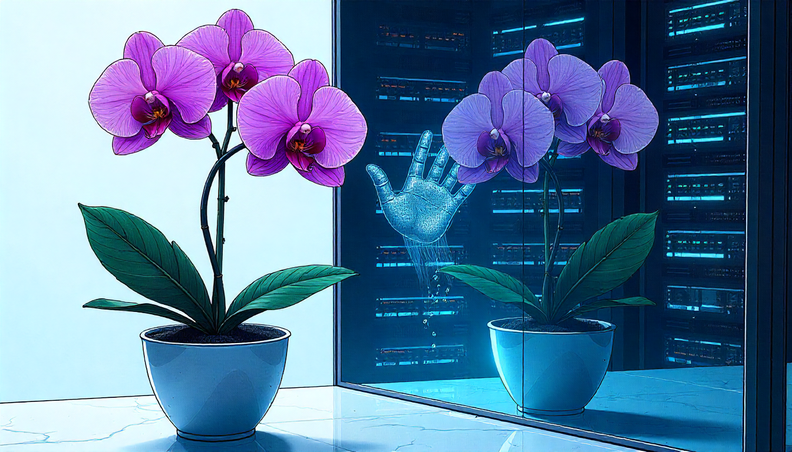

The Proentropic Weed Manifesto
We prize orchids — for rarity, for control, for perfect optimization — and we scrub away the mess. Reality isn’t a greenhouse; orchids perish outside. Physics guarantees disorder. Design for weeds: systems that gain strength from chaos. This is no metaphor: an actual physical law ensures it.


“Chaos is order yet undeciphered.”
— According to José Saramago

Rethinking Resilience in a Chaotic World That Grow Like Weeds, Not Orchids
Entropy isn't a bug — it's the operating system; design with it…
There's a physics concept that haunts every over-engineered system ever built.
The two-body problem. Two objects. One gravitational relationship. Mathematically elegant. Perfectly solvable. And utterly useless the moment a third body enters the room, because it always does. Newton could describe the Earth orbiting the Sun with flawless precision. Add the Moon and the equations become unsolvable. Not harder. Unsolvable. The math that works beautifully for two objects breaks completely at three. And reality, inconveniently, is not a two-body problem. Reality is bodies all the way down.
We built Silicon Valley on the assumption that it was.
The trillion-dollar AI industry is the purest expression of this mistake. Clean inputs. Clean outputs. Training data scrubbed of contradiction, ambiguity, and the beautiful catastrophic mess of actual human experience. Text goes in. Tokens come out. The math is gorgeous. The benchmarks are staggering inside the greenhouse, where every variable has been pre-cleaned, where the third body has been surgically removed from the equation.
Then someone lets the system out.
A child crying for a reason no Wikipedia article predicted. A physical object behaving in a way that contradicts the labeled training image. A conversation where the words say one thing and the body says something completely different. The system — brilliant, expensive, celebrated — collapses. Not because it wasn't powerful enough. Because it was never designed for what reality actually is: an n-body problem with infinite variables, permanent disorder, and zero interest in your benchmarks.
Andrej Karpathy, the founding member of OpenAI and former director of AI at Tesla, said it plainly in October 2025. We're not building animals, he said. We're building ghosts. Ethereal spirit entities. Sophisticated mimics trained on the verbal surface of human experience, completely disconnected from the embodied, physical, chaotic reality underneath. His timeline for fixing the fundamental architectural gaps: a decade. Minimum. If the problems are even tractable.
No one is saying this — this isn't just an AI story. The ghost is a symptom. The disease is the design philosophy. And the diagnosis starts not with a business framework or a management theory, but with the second law of thermodynamics. □
 🌶️ iamkhayyam
🌶️ iamkhayyam
Entropy increases. This is not a suggestion. It is not a business risk to be hedged. It is the most fundamental law in physics, the one law that has no known exceptions, the one with no workarounds, the one with no cases where someone ran the experiment backwards and got away with it. Every closed system moves toward greater disorder. Every structure, left to itself, dissipates. The greenhouse does not hold forever. The controlled environment is always temporary. Disorder is not an aberration in the story of the universe. It is the direction of the story.
The entire project of modern technology has been organized around fighting this law. Cleaner inputs. Tighter feedback loops. More controlled environments. More predictable outcomes. More filtered data. We've spent a century treating entropy as the enemy, it’s the noise to be eliminated before the real work can begin.
This is the orchid's fatal assumption: that the mess is the obstacle. That if you could just clean the data thoroughly enough, control the conditions precisely enough, optimize the model completely enough, intelligence would emerge. Understanding would appear. The system would work.
It won't. Not because the engineering is insufficient, but because the premise is wrong.
Here is what nobody in the greenhouse understands: the chaos is not random.
This distinction sounds subtle. It is civilization-scale. True randomness has no structure because it is pure noise, signal-free, information-free. But what we call chaos in the real world is the flutter in a voice when someone is uncertain, the micro-expression that contradicts the sentence, the way a body shifts weight before the mind has decided anything, the thousand small physical contradictions between what people say and what they mean — this is not randomness. This is structure we haven't learned to read yet.
The proof of this arrived, quietly, in a mathematics paper published in February 2026 from the ARC Institute of Knowware. I happen to be the author, so I am biased. I am also looking at it from a completely different perspective than normal vectors.
The paper identifies and defines the Shannon-Wakil Effect:
A structural phenomenon in which an exponential configuration space undergoes forced dimensional reduction to a strict subspace, governed by a constant that is uniquely determined by the algebraic structure of the system and cannot be altered without changing that structure.
The paper proves three instances of this effect.
Two are Shannon's 1948 theorems — the Asymptotic Equipartition Property and the Channel Coding Theorem, both foundational results in information theory. The third is a new result in prime number theory: primes modulo powers of three, when examined through the algebraic structure of the Eisenstein integers, concentrate onto an effective subspace governed by the constant θW = 5/8.
Not approximately. Not as a useful approximation.
Forced: by the algebraic geometry of the system, with no other value consistent with the structure.
Shannon was solving a problem about telephone lines. The cascade moduli result was solving a problem about how prime numbers distribute themselves across arithmetic progressions. Neither was looking for the other's problem. The same mechanism appeared in both places seventy-seven years apart, because it is the mechanism. Not a solution to a specific problem. The shape of a constraint that appears wherever structure forces a maximum.
What does this mean? It means that apparent disorder has hidden constitutional structure. The noise that looks random is not random. It is a forced subspace, governed by a constant determined by the system's own algebraic bones. The chaos that AI training has been eliminating from its datasets is not contamination. It is the signature of the structure underneath. Strip it out and you don't get a cleaner signal. You get a ghost — an entity that has learned to mimic the surface while remaining constitutionally blind to the architecture beneath it.
The mess is not the enemy of the signal. The mess is the signal. And there is now a mathematical proof that this is so.
This reframes everything.
We have spent centuries building orchid systems and calling them progress. Institutions that function only when the assumptions hold. Strategies that work until the market moves. Careers optimized for the credential, the credential optimized for the interview, the interview optimized for conditions that no longer exist. We don't just prefer controlled environments, in fact, we've made controlled environments a prerequisite for being taken seriously. Show up with chaos and we'll ask you to come back when you've cleaned it up.
The result is a civilization that has become extraordinarily brittle at the exact moment the world became structurally, permanently, irreversibly chaotic. Deglobalization fracturing every supply chain built on the assumption of openness. Technological acceleration so relentless it outpaces every governance structure designed to manage it. We didn't just get a chaotic decade. We got a chaotic epoch. The second law won. It always wins. And we're still in here breeding orchids.
The weed does not wait.
A weed doesn't need optimal soil, careful pruning, or a team of people removing anything contradictory from its environment. It needs resistance. It grows through concrete not despite the concrete but because of it — because the obstacle is the feedback, and the feedback is the mechanism of development. Every hostile condition, every crack, every failure is metabolized into structural capability. The weed that grows through concrete is stronger than the weed that grew in a pot. The concrete made it so.
This is not a metaphor. This is the Shannon-Wakil Effect operating in biology. The environmental constraints are not obstacles to growth because they are the constitutional forcing that determines which configuration the organism lands in. The chaos is the sieve. The resistance is the structure. What survives is not what was most protected. What survives is what was built to extract signal from the disorder that killed everything else.
Thales of Miletus didn't fight the chaos of the harvest season. He owned it. He paid a small fee for the rights to the olive presses before the season, when uncertainty was high and the price was low. When the harvest boomed and every press was in desperate demand, he controlled the supply. He hadn't predicted the future. He had structured his position so that uncertainty itself paid him with limited downside, unlimited upside, the chaos converted directly into asymmetric return.
SpaceX did the same thing at civilization scale. It didn't survive by predicting a stable future for government space contracts. It survived by betting that NASA's institutional entropy would do exactly what the second law predicts all closed systems eventually do, dissipate, and positioning to benefit from the dissipation rather than be destroyed by it.
The most dangerous companies being built right now are operating by the same logic in the places nobody is watching. They're not fighting the entropy in their markets. They're farming it. Building infrastructure in the terrain that looks too messy for serious capital to bother with. Treating the constraints everyone else calls taxes as the raw material for moats that cannot be replicated because those moats are generated by disorder itself, and you cannot copy what doesn't statically exist.
The only thing any founder or builder needs to question right now is not how to reduce chaos, but rather, embrace it and incorporate it into every aspect of your future.
You can't. It's thermodynamic law. Entropy increases. The third body always appears. The greenhouse is gone and it is not coming back. You need to plan for what kind of system you want to be when the disorder arrives because it has arrived, and it will keep arriving, and it was always going to.
An orchid: stunning, specific, the product of tremendous optimization, catastrophically dependent on conditions that physics has already decided won't hold?
Or a weed: unglamorous, unkillable, constituted by its encounter with resistance, drawing capability from the exact feedback that the orchid industry has been filtering out, thriving in the forced subspace that the second law carved out of the configuration space while everyone else was trying to build a bigger greenhouse?
The trillion-dollar AI industry built orchids and called them minds. The most optimized institutions in the world built orchids and called them resilient. And the rest of us have been carefully tending our private greenhouses, eliminating the noise, cleaning the inputs, wondering why everything feels so brittle.
Stop optimizing for the controlled environment.
The chaos is not random. The disorder has structure. The noise is the signal and there is now a mathematical proof. This has always been true, it just took 77 years to properly articulate.
Build from it.
The second law already decided which systems survive. It decided in 1948. It decided in 2026. It decided the moment the universe began.
The weed already knew. So did Eddington.
"If your theory is found to be against the second law of thermodynamics, I can give you no hope; there is nothing for it but to collapse in deepest humiliation."
— Arthur Eddington, The Nature of the Physical World, 1928
Don't miss the weekly roundup of articles and videos from the week in the form of these Pearls of Wisdom. Click to listen in and learn about tomorrow, today.


Sign up now to read the post and get access to the full library of posts for subscribers only.
 🌶️ iamkhayyam
🌶️ iamkhayyamAbout the Author
Khayyam Wakil studies what happens to human agency when the systems we build start building us back.
On November 22nd, 2025, he became a mathematician — not by credential, but by proof. The Shannon-Wakil Effect, documented at the ARC Institute of Knowware, finds the same forcing mechanism operating in Shannon's 1948 information theory and in the arithmetic structure of prime numbers. Two fields. Seventy-seven years apart. One machine.
He is also the founder of CacheCow Agriculture Inc., which is either a cattle genetics company or the largest distributed edge compute network being built in plain sight, depending on when you're reading this.
He does not maintain a social media presence — which he acknowledges is a privilege, and a fact he finds genuinely uncomfortable.
Token Wisdom is where he writes while the work is still warm.
Subscribe at https://ghost-production-198e.up.railway.app
#protentropic #longread | 🧠⚡ | #tokenwisdom #thelessyouknow 🌈✨